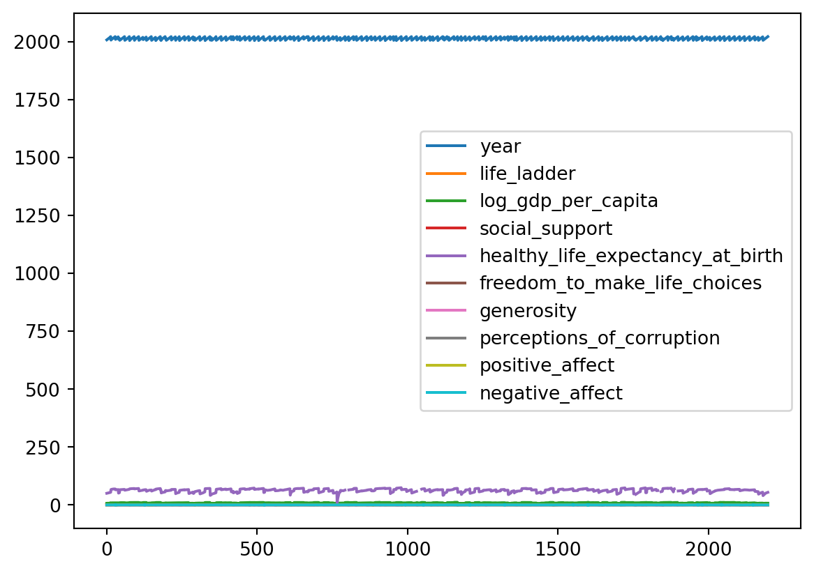
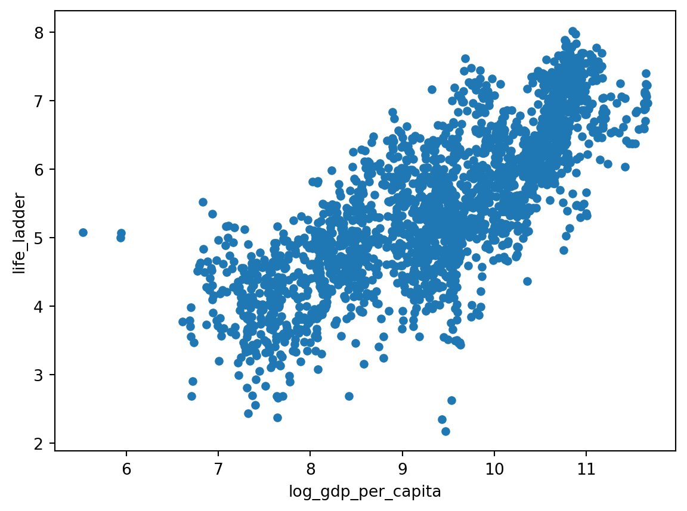
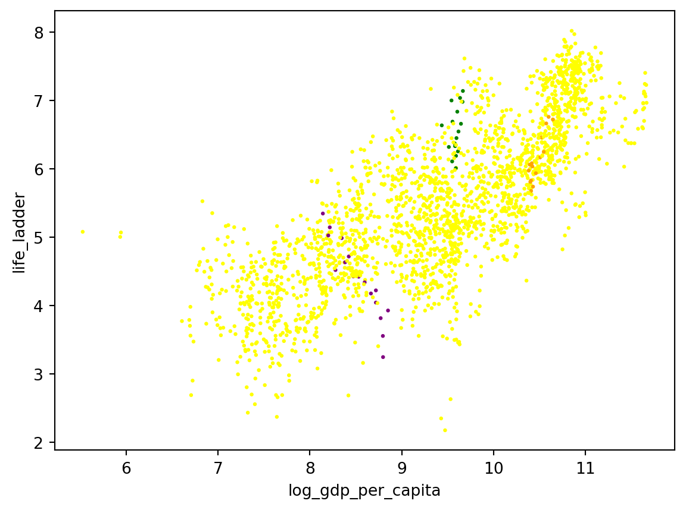
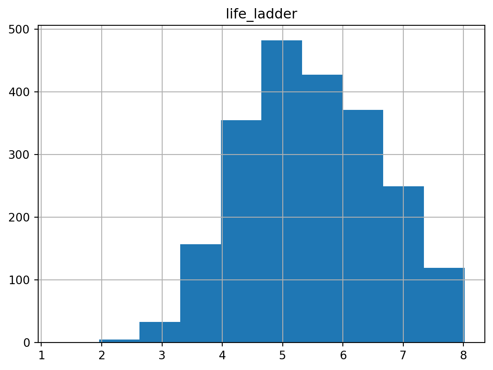
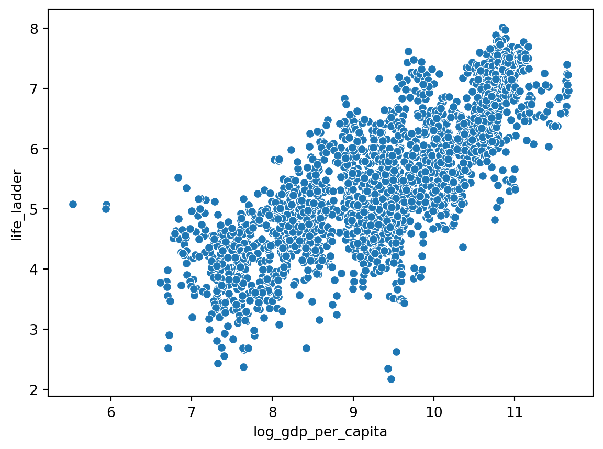

import pandas as pd
import seaborn as snsAnálise exploratória de dados
Introdução ao Pandas
Pandas
Python
Pandas
Este artigo foi reescrito em Domingo, 08 de Setembro de 2024.

Introdução
O pandas é uma ferramenta de análise e manipulação de dados de código aberto rápida, poderosa, flexível e fácil de usar, desenvolvida com base na linguagem de programação Python. Clique aqui! para acessar a documentação oficial do Pandas.
Para instalar o Pandas, basta executar o comando: pip install pandas no terminal. Com o pandas instalado, podemos carrega-lo com o comando import pandas as pd. Vamos importar a biblioteca seaborn para plotar gráficos com o comando import seaborn as sns.
Agora que temos o pandas carregado podemos importar um arquivo CSV para análise. Além disso, podemos usar o pandas para coletar dados em diversos formatos, como JSON, HTML, SQL, Excel, entre outros. Para mais informações sobre como carregar dados com o pandas, clique aqui!.
df = pd.read_csv('../dados/world_happiness.csv')Operações básicas com o Pandas
Podemos visualizar as primeiras linhas do nosso DataFrame com o comando df.head(). Para visualizar as últimas linhas, basta usar o comando df.tail().
# Visualizando as primeiras linhas do DataFrame
df.head()| Country name | year | Life Ladder | Log GDP per capita | Social support | Healthy life expectancy at birth | Freedom to make life choices | Generosity | Perceptions of corruption | Positive affect | Negative affect | |
|---|---|---|---|---|---|---|---|---|---|---|---|
| 0 | Afghanistan | 2008 | 3.724 | 7.350 | 0.451 | 50.5 | 0.718 | 0.168 | 0.882 | 0.414 | 0.258 |
| 1 | Afghanistan | 2009 | 4.402 | 7.509 | 0.552 | 50.8 | 0.679 | 0.191 | 0.850 | 0.481 | 0.237 |
| 2 | Afghanistan | 2010 | 4.758 | 7.614 | 0.539 | 51.1 | 0.600 | 0.121 | 0.707 | 0.517 | 0.275 |
| 3 | Afghanistan | 2011 | 3.832 | 7.581 | 0.521 | 51.4 | 0.496 | 0.164 | 0.731 | 0.480 | 0.267 |
| 4 | Afghanistan | 2012 | 3.783 | 7.661 | 0.521 | 51.7 | 0.531 | 0.238 | 0.776 | 0.614 | 0.268 |
# Visualizando as últimas linhas do DataFrame
df.tail()| Country name | year | Life Ladder | Log GDP per capita | Social support | Healthy life expectancy at birth | Freedom to make life choices | Generosity | Perceptions of corruption | Positive affect | Negative affect | |
|---|---|---|---|---|---|---|---|---|---|---|---|
| 2194 | Zimbabwe | 2018 | 3.616 | 7.783 | 0.775 | 52.625 | 0.763 | -0.051 | 0.844 | 0.658 | 0.212 |
| 2195 | Zimbabwe | 2019 | 2.694 | 7.698 | 0.759 | 53.100 | 0.632 | -0.047 | 0.831 | 0.658 | 0.235 |
| 2196 | Zimbabwe | 2020 | 3.160 | 7.596 | 0.717 | 53.575 | 0.643 | 0.006 | 0.789 | 0.661 | 0.346 |
| 2197 | Zimbabwe | 2021 | 3.155 | 7.657 | 0.685 | 54.050 | 0.668 | -0.076 | 0.757 | 0.610 | 0.242 |
| 2198 | Zimbabwe | 2022 | 3.296 | 7.670 | 0.666 | 54.525 | 0.652 | -0.070 | 0.753 | 0.641 | 0.191 |
Podemos visualizar os índices e nome das colunas do DataFrame com os comandos df.index e df.columns, respectivamente.
# Visualizando os índices do DataFrame
df.indexRangeIndex(start=0, stop=2199, step=1)# Visualizando os nomes das colunas do DataFrame
df.columnsIndex(['Country name', 'year', 'Life Ladder', 'Log GDP per capita',
'Social support', 'Healthy life expectancy at birth',
'Freedom to make life choices', 'Generosity',
'Perceptions of corruption', 'Positive affect', 'Negative affect'],
dtype='object')Como vimos as colunas possuem espaços em seus nomes, para remover esses espaços podemos usar o comando df.columns = df.columns.str.replace(' ', '_').
# Removendo os espaços dos nomes das colunas
df.columns = df.columns.str.replace(' ', '_')Além disso, podemos colocar os nomes das colunas em minúsculo.
# Colocando os nomes das colunas em minúsculo
df.columns = df.columns.str.lower()# Visualizando os nomes das colunas do DataFrame
df.columnsIndex(['country_name', 'year', 'life_ladder', 'log_gdp_per_capita',
'social_support', 'healthy_life_expectancy_at_birth',
'freedom_to_make_life_choices', 'generosity',
'perceptions_of_corruption', 'positive_affect', 'negative_affect'],
dtype='object')Podemos visualizar as informações do DataFrame com o comando df.info(). Além disso, podemos visualizar o tipo dos dados de cada coluna com o comando df.dtypes.
# Visualizando as informações do DataFrame
df.info()<class 'pandas.core.frame.DataFrame'>
RangeIndex: 2199 entries, 0 to 2198
Data columns (total 11 columns):
# Column Non-Null Count Dtype
--- ------ -------------- -----
0 country_name 2199 non-null object
1 year 2199 non-null int64
2 life_ladder 2199 non-null float64
3 log_gdp_per_capita 2179 non-null float64
4 social_support 2186 non-null float64
5 healthy_life_expectancy_at_birth 2145 non-null float64
6 freedom_to_make_life_choices 2166 non-null float64
7 generosity 2126 non-null float64
8 perceptions_of_corruption 2083 non-null float64
9 positive_affect 2175 non-null float64
10 negative_affect 2183 non-null float64
dtypes: float64(9), int64(1), object(1)
memory usage: 189.1+ KB# Visualizando o tipo dos dados de cada coluna
df.dtypescountry_name object
year int64
life_ladder float64
log_gdp_per_capita float64
social_support float64
healthy_life_expectancy_at_birth float64
freedom_to_make_life_choices float64
generosity float64
perceptions_of_corruption float64
positive_affect float64
negative_affect float64
dtype: objectSelecionando linhas e colunas do DataFrame
Selecionando colunas do DataFrame
Podemos selecionar a coluna life_ladder do DataFrame com o comando df.life_ladder. Além disso, podemos selecionar mais de uma coluna passando uma lista com os nomes das colunas desejadas.
# Selecionando a coluna life_ladder
x = df.life_ladder
print(x)0 3.724
1 4.402
2 4.758
3 3.832
4 3.783
...
2194 3.616
2195 2.694
2196 3.160
2197 3.155
2198 3.296
Name: life_ladder, Length: 2199, dtype: float64Uma outra forma é passar o nome da coluna entre colchetes, como no exemplo abaixo.
# Selecionando a coluna life_ladder
x = df['life_ladder']
print(x)0 3.724
1 4.402
2 4.758
3 3.832
4 3.783
...
2194 3.616
2195 2.694
2196 3.160
2197 3.155
2198 3.296
Name: life_ladder, Length: 2199, dtype: float64Selecionando linhas do DataFrame
Podemos selecionar as linhas de um DataFrame com o comando df[1:5].
# Selecionando as linhas de 1 a 5
x = df[1:5]
print(x) country_name year life_ladder log_gdp_per_capita social_support \
1 Afghanistan 2009 4.402 7.509 0.552
2 Afghanistan 2010 4.758 7.614 0.539
3 Afghanistan 2011 3.832 7.581 0.521
4 Afghanistan 2012 3.783 7.661 0.521
healthy_life_expectancy_at_birth freedom_to_make_life_choices generosity \
1 50.8 0.679 0.191
2 51.1 0.600 0.121
3 51.4 0.496 0.164
4 51.7 0.531 0.238
perceptions_of_corruption positive_affect negative_affect
1 0.850 0.481 0.237
2 0.707 0.517 0.275
3 0.731 0.480 0.267
4 0.776 0.614 0.268 Operadores lógicos
Podemos usar operadores lógicos para selecionar linhas do DataFrame. Por exemplo, podemos selecionar as linhas onde o valor da coluna year é igual a 2018.
# Selecionando as linhas onde o valor da coluna year é igual a 2018
x = df[df.year == 2018]
print(x) country_name year life_ladder log_gdp_per_capita social_support \
10 Afghanistan 2018 2.694 7.631 0.508
24 Albania 2018 5.004 9.497 0.684
35 Algeria 2018 5.043 9.370 0.799
55 Argentina 2018 5.793 10.032 0.900
72 Armenia 2018 5.062 9.490 0.814
... ... ... ... ... ...
2133 Venezuela 2018 5.006 5.935 0.887
2150 Vietnam 2018 5.296 9.173 0.832
2165 Yemen 2018 3.058 7.444 0.789
2178 Zambia 2018 4.041 8.139 0.718
2194 Zimbabwe 2018 3.616 7.783 0.775
healthy_life_expectancy_at_birth freedom_to_make_life_choices \
10 53.575 0.374
24 69.075 0.824
35 66.300 0.583
55 67.050 0.846
72 66.825 0.808
... ... ...
2133 64.575 0.611
2150 65.200 0.909
2165 57.725 0.553
2178 53.975 0.791
2194 52.625 0.763
generosity perceptions_of_corruption positive_affect negative_affect
10 -0.091 0.928 0.385 0.405
24 0.007 0.899 0.592 0.319
35 -0.151 0.759 0.534 0.293
55 -0.214 0.855 0.732 0.321
72 -0.169 0.677 0.535 0.455
... ... ... ... ...
2133 0.072 0.828 0.723 0.374
2150 -0.061 0.808 0.614 0.191
2165 -0.124 0.793 0.409 0.315
2178 0.048 0.811 0.662 0.351
2194 -0.051 0.844 0.658 0.212
[141 rows x 11 columns]Selecioando linhas onde life_ladder é maior que 5.
# Selecionando as linhas onde o valor da coluna life_ladder é maior que 5
x = df[df.life_ladder > 5]
x| country_name | year | life_ladder | log_gdp_per_capita | social_support | healthy_life_expectancy_at_birth | freedom_to_make_life_choices | generosity | perceptions_of_corruption | positive_affect | negative_affect | |
|---|---|---|---|---|---|---|---|---|---|---|---|
| 15 | Albania | 2009 | 5.485 | 9.241 | 0.833 | 67.320 | 0.525 | -0.159 | 0.864 | 0.564 | 0.279 |
| 16 | Albania | 2010 | 5.269 | 9.283 | 0.733 | 67.600 | 0.569 | -0.174 | 0.726 | 0.576 | 0.300 |
| 17 | Albania | 2011 | 5.867 | 9.311 | 0.759 | 67.880 | 0.487 | -0.206 | 0.877 | 0.566 | 0.257 |
| 18 | Albania | 2012 | 5.510 | 9.326 | 0.785 | 68.160 | 0.602 | -0.170 | 0.848 | 0.553 | 0.271 |
| 24 | Albania | 2018 | 5.004 | 9.497 | 0.684 | 69.075 | 0.824 | 0.007 | 0.899 | 0.592 | 0.319 |
| ... | ... | ... | ... | ... | ... | ... | ... | ... | ... | ... | ... |
| 2153 | Vietnam | 2021 | 5.540 | 9.271 | 0.799 | 65.500 | 0.897 | 0.107 | 0.798 | 0.651 | 0.280 |
| 2154 | Vietnam | 2022 | 6.267 | 9.333 | 0.879 | 65.600 | 0.975 | -0.179 | 0.703 | 0.774 | 0.108 |
| 2170 | Zambia | 2009 | 5.260 | 7.971 | 0.782 | 48.740 | 0.696 | -0.097 | 0.917 | 0.693 | 0.123 |
| 2172 | Zambia | 2012 | 5.013 | 8.094 | 0.780 | 50.720 | 0.788 | 0.007 | 0.806 | 0.676 | 0.250 |
| 2173 | Zambia | 2013 | 5.244 | 8.111 | 0.761 | 51.380 | 0.770 | -0.105 | 0.732 | 0.727 | 0.308 |
1410 rows × 11 columns
Resetando o índice do DataFrame filtrado.
new_df = df[df["year"] == 2022]
new_df = new_df.reset_index(drop=True)
new_df| country_name | year | life_ladder | log_gdp_per_capita | social_support | healthy_life_expectancy_at_birth | freedom_to_make_life_choices | generosity | perceptions_of_corruption | positive_affect | negative_affect | |
|---|---|---|---|---|---|---|---|---|---|---|---|
| 0 | Afghanistan | 2022 | 1.281 | NaN | 0.228 | 54.875 | 0.368 | NaN | 0.733 | 0.206 | 0.576 |
| 1 | Albania | 2022 | 5.212 | 9.626 | 0.724 | 69.175 | 0.802 | -0.066 | 0.846 | 0.547 | 0.255 |
| 2 | Argentina | 2022 | 6.261 | 10.011 | 0.893 | 67.250 | 0.825 | -0.128 | 0.810 | 0.724 | 0.284 |
| 3 | Armenia | 2022 | 5.382 | 9.668 | 0.811 | 67.925 | 0.790 | -0.154 | 0.705 | 0.531 | 0.549 |
| 4 | Australia | 2022 | 7.035 | 10.854 | 0.942 | 71.125 | 0.854 | 0.153 | 0.545 | 0.711 | 0.244 |
| ... | ... | ... | ... | ... | ... | ... | ... | ... | ... | ... | ... |
| 109 | Uruguay | 2022 | 6.671 | 10.084 | 0.905 | 67.500 | 0.878 | -0.052 | 0.631 | 0.775 | 0.267 |
| 110 | Uzbekistan | 2022 | 6.016 | 8.990 | 0.879 | 65.600 | 0.959 | 0.309 | 0.616 | 0.741 | 0.225 |
| 111 | Venezuela | 2022 | 5.949 | NaN | 0.899 | 63.875 | 0.770 | NaN | 0.798 | 0.754 | 0.292 |
| 112 | Vietnam | 2022 | 6.267 | 9.333 | 0.879 | 65.600 | 0.975 | -0.179 | 0.703 | 0.774 | 0.108 |
| 113 | Zimbabwe | 2022 | 3.296 | 7.670 | 0.666 | 54.525 | 0.652 | -0.070 | 0.753 | 0.641 | 0.191 |
114 rows × 11 columns
Visualizando dados faltantes
Podemos visualizar os dados faltantes do DataFrame com o comando df.isnull().sum().
df.isnull().sum()country_name 0
year 0
life_ladder 0
log_gdp_per_capita 20
social_support 13
healthy_life_expectancy_at_birth 54
freedom_to_make_life_choices 33
generosity 73
perceptions_of_corruption 116
positive_affect 24
negative_affect 16
dtype: int64Estatísticas descritivas
Podemos visualizar as estatísticas descritivas do DataFrame com o comando df.describe().
df.describe()| year | life_ladder | log_gdp_per_capita | social_support | healthy_life_expectancy_at_birth | freedom_to_make_life_choices | generosity | perceptions_of_corruption | positive_affect | negative_affect | |
|---|---|---|---|---|---|---|---|---|---|---|
| count | 2199.000000 | 2199.000000 | 2179.000000 | 2186.000000 | 2145.000000 | 2166.000000 | 2126.000000 | 2083.000000 | 2175.000000 | 2183.000000 |
| mean | 2014.161437 | 5.479227 | 9.389760 | 0.810681 | 63.294582 | 0.747847 | 0.000091 | 0.745208 | 0.652148 | 0.271493 |
| std | 4.718736 | 1.125527 | 1.153402 | 0.120953 | 6.901104 | 0.140137 | 0.161079 | 0.185835 | 0.105913 | 0.086872 |
| min | 2005.000000 | 1.281000 | 5.527000 | 0.228000 | 6.720000 | 0.258000 | -0.338000 | 0.035000 | 0.179000 | 0.083000 |
| 25% | 2010.000000 | 4.647000 | 8.500000 | 0.747000 | 59.120000 | 0.656250 | -0.112000 | 0.688000 | 0.572000 | 0.208000 |
| 50% | 2014.000000 | 5.432000 | 9.499000 | 0.836000 | 65.050000 | 0.770000 | -0.023000 | 0.800000 | 0.663000 | 0.261000 |
| 75% | 2018.000000 | 6.309500 | 10.373500 | 0.905000 | 68.500000 | 0.859000 | 0.092000 | 0.869000 | 0.738000 | 0.323000 |
| max | 2022.000000 | 8.019000 | 11.664000 | 0.987000 | 74.475000 | 0.985000 | 0.703000 | 0.983000 | 0.884000 | 0.705000 |
Plotando gráficos
df.plot()
Como pudemos notar a plotagem do gráfico não ficou muito legível. Podemos melhorar a visualização do gráfico. Para isso, vamos plotar um gráfico de dispersão com a coluna log_gdp_per_capita no eixo x e a coluna life_ladder no eixo y.
df.plot(kind='scatter', x='log_gdp_per_capita', y='life_ladder')
Podemos melhorar a visualização do gráfico adicionando cores e alterando o tamanho dos pontos. Para isso, vamos criar um dicionário com as cores que queremos usar e passar esse dicionário para o parâmetro c do método plot.
cmap = {
'Brazil': 'Green',
'Slovenia': 'Orange',
'India': 'purple'
}
df.plot(
kind='scatter',
x='log_gdp_per_capita',
y='life_ladder',
c=[cmap.get(c, 'yellow') for c in df.country_name], # Set the colors
s=2 # Set the size of the points
)
Podemos plotar um histograma da coluna life_ladder com o comando df.hist("life_ladder").
df.hist("life_ladder")array([[<Axes: title={'center': 'life_ladder'}>]], dtype=object)
Além disso podemos criar gráficos com o seaborn. Por exemplo, podemos criar um gráfico de dispersão com a coluna log_gdp_per_capita no eixo x e a coluna life_ladder no eixo y.
sns.scatterplot(data=df, x='log_gdp_per_capita', y='life_ladder')
Podemos plotar vários gráficos ao mesmo tempo com o seaborn.
sns.pairplot(df)
Operações com colunas
Podemos criar uma nova coluna no DataFrame com o comando df['nova_coluna'] = df['coluna1'] + df['coluna2'].
df['this_column_makes_no_sense'] = df["year"] + df["life_ladder"]
df["net_affect_difference"] = df["positive_affect"] - df["negative_affect"]
df.head()| country_name | year | life_ladder | log_gdp_per_capita | social_support | healthy_life_expectancy_at_birth | freedom_to_make_life_choices | generosity | perceptions_of_corruption | positive_affect | negative_affect | this_column_makes_no_sense | net_affect_difference | |
|---|---|---|---|---|---|---|---|---|---|---|---|---|---|
| 0 | Afghanistan | 2008 | 3.724 | 7.350 | 0.451 | 50.5 | 0.718 | 0.168 | 0.882 | 0.414 | 0.258 | 2011.724 | 0.156 |
| 1 | Afghanistan | 2009 | 4.402 | 7.509 | 0.552 | 50.8 | 0.679 | 0.191 | 0.850 | 0.481 | 0.237 | 2013.402 | 0.244 |
| 2 | Afghanistan | 2010 | 4.758 | 7.614 | 0.539 | 51.1 | 0.600 | 0.121 | 0.707 | 0.517 | 0.275 | 2014.758 | 0.242 |
| 3 | Afghanistan | 2011 | 3.832 | 7.581 | 0.521 | 51.4 | 0.496 | 0.164 | 0.731 | 0.480 | 0.267 | 2014.832 | 0.213 |
| 4 | Afghanistan | 2012 | 3.783 | 7.661 | 0.521 | 51.7 | 0.531 | 0.238 | 0.776 | 0.614 | 0.268 | 2015.783 | 0.346 |